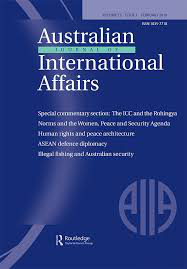

收录于合集

作品简介
【作者】 Catherine Jones：苏格兰圣安德鲁斯大学国际关系学院。
【编译】 晋 玉
【校对】 丁伟航
【排版】 杨 洋
【来源】 Jones, Catherine. “South East Asian powers and contributions to peacekeeping operations: UN-ASEAN partnering for peace?.” Australian Journal of International Affairs 74.1(2020): 89-107.

期刊简介
 Australian Journal of International Affairs，成立于1946年，由澳大利亚国际事务研究所负责编辑、出版。该期刊主要关注以亚太地区(但不限于)为主的国际政治、社会、经济和法律问题的学术研究，影响因子为1.171。
**** 东南亚国家和维和行动贡献：联合国-东盟为和平结伴?
South East Asian powers and contributions to peacekeeping operations: UN- ASEAN partnering for peace?
内容提要
区域在联合国维和行动的实践和合法性问题中越来越重要。2008年，联合国秘书长发表了一份关于联合国和区域组织关系的报告（S/2008/186* *），报告在第八章和其他章节涉及活动的部分都强调需要继续发展区域——联合国伙伴关系以加强全球维和行动能力建设，明确、细化区域和联合国职责。时至今日，距离联合国秘书长报告的发表已长达10年，距离联合国和平行动专题高级别独立小组维和报告（HIPPO）的公布也有4年光景，但我们仍旧迫切需要了解联合国维和行动正在如何发生变化，我们又如何应对这些变化。本文认为由于联合国处理伙伴关系的方式，其从包括东盟在内的全球潜在伙伴的贡献中获取经验的可能性已被排除。此外，尽管仍有其它途径使这种知识、经验转移成为可能，但这些途径往往被联合国内部的做法所阻碍或所掩盖。
文章导读
01
**引言
**
1.选题背景和意义
2008年联合国秘书长发表的关于联合国和区域组织关系的报告（S/2008/186* *）和2015年联合国和平行动专题高级别独立小组公布的维和报告（HIPPO 2015）都强调要加强联合国——区域组织维和伙伴关系以更迅速、更有效地组织推进维和行动。因此作者认为有必要解答“区域与联合国如何开展维和合作？区域不同维和合作的性质和成果会不同吗？”等问题。为此本文将利用米特兰尼（Mitrany）功能主义的方法探究联合国与区域之间增强联系的不同机制，探究导致不同合作的活动类型。简言之，即探究职能合作能否带来一种影响维和任务中区域合作方式的规范性结果？
此外，越来越多的学者也注意到“来自南半球的国家不再只是国际干预的接受者和执行者，而是越来越积极、自信地为国际干预行动建言献策”。然而大多数现有研究所指的“南半球的维和伙伴”仅有西非国家经济共同体（ECOWAS）和欧盟（EU），虽然这一定程度上表明南北之间在维和行动的国家角色和责任问题上已达成一定共识，但仅仅专注于欧盟、非洲会导致忽视其它维和行动参与成员、忽视他们所作出的贡献，其中尤其会忽视那些远赴他乡执行任务却缺乏正式组织的区域，又或者是那些成员稀少的、面积更小的区域。同时，可以看到东盟确实在解决区域争端和灾难过程中积累到了丰富的经验，在联合国政治和建设和平事务部（DPPA）得出“东盟维护和平稳定的作用正在且应该变得越来越显著”（DPPA 2019）结论的情况下,应当研究联合国与东盟的维和伙伴关系。
然而，大多数区域主义研究认为东盟所采取的是软多边主义模式（form of soft regionalism）且其内部存在“合作竞争”，这导致东盟被视为一个不完整(incomplete)或未被承认（unrecognised）的地区。再考虑到联合国在发展工作伙伴机制中所面临的困境，作者提出这样的问题：这意味着东盟不是也不可能成为联合国的维和伙伴吗？这对从派遣国向联合国机构进行的知识、技术转移又意味着什么?
2. 研究思路与方法
根据米特兰尼（Mitrany）功能主义的描述，成为伙伴的两个实体都应能够促进共同战略构想的发展，并在职能上促进其实现。这意味着伙伴之间应该积极参与信息的传递，参与相互的实践活动。简单说即区域会对国际进行观点输出（the regional export of ideas to international level）。故在伙伴关系中，所有级别都需要针对所有相关话题展开丰富的对话和会议，其中包括领导人会议、技术会议、1.5轨和2轨会议，而不同级别、不同主题的参会人员应当保持不变。
3. 相关概念界定与研究对象说明
（1）国际机制（international institutions）与国际组织（international organizations）
国际机制（international institutions）指的是管理国际行为的一套规则；国际组织（international organizations）是指一个存在的，诸如联合国、东盟、欧盟的实体。
（2）联合国和东盟
在没有特殊指代的情况下，本文出现的“联合国”表示联合国整个组织，其他情况下以联合国秘书处和平行动部门（DPO）、政治和建设和平事务部（DPPA)等为重点的联合国内部的具体部门将得以点明。本文出现的东盟则指秘书处通过东盟10个成员国的协商一致所采取的行动和东盟10国作为一个集体所做的决策。
02
维和与国际组织
区域的作用总是在联合国讨论其在维和行动中面对的诸如预算紧张、语言差异等困难时被反复提及并得以强调。这主要因为 1.需要维持和平的东道国会把区域组织视为“自己人”（insider），再加上区域组织与东道国在文化和历史上有相似性，区域组织的参与便产生了能够增加维和行动合法性的效果。2.维和部队融入东道国社会和当地人民的能力会通过提供与人道主义救援、灾难援助相关的活动得以展现。更加接近的文化会使维和部队的行动变得更加高效，这样维和部队的融入能力和维和行动的开展会产生相互促进，相辅相成的效果。
此外，需要注意是促进当地参与维和行动的因素是观念上的（包括文化、语言、历史）的而非地域上的（指地理临近）。由于信仰相同的宗教，印尼派驻黎巴嫩的维和部队成功融入黎巴嫩当地；借助音乐和舞蹈，印尼高效地完成了在黎巴嫩的维和任务。这意味着来自其它区域的维和部队也能够借助观念的相似性成功融入当地，高效完成维和任务。此外考虑到区域国家间的紧张关系，地理临近反倒可能产生一种效果——抵消（negate）观念因素带来的积极影响。这都表明观念相似才是维和行动高效、成功的关键。
03
**东盟和维和
**
（1）东盟维和现状 通过不断促进在同种行动中的协作（coordination），国家已经从共存迈入合作（cooperation）。对于东盟地区来说，东盟部队派遣国之间的关系牢固地建立在这种合作和协作上。近年来印尼向联合国派遣大量女性维和人员，柬埔寨在扫雷问题上卓有成效，泰国在水源净化和地下水勘探方面有出色表现……在2018年，东盟培训中心成为联合国维和培训的地点。东盟虽然不是联合国维和行动的最大贡献者，但可以发觉它在“以有效方式通过联合国系统（在区域内）进行知识、技术转移，避免资源或技术重复”这方面有着重要贡献。这也使得东南亚各国在内部进行协调，避免了区域内的同行竞争。此外东盟也在试图通过维和行动促进区域身份认同，但隐藏在这背后的是东盟国家共同的信念——维和行动能够提升本国地位，发展专业人才。尽管东盟对维和行动热情高涨，但其在“使该地区成为联合国伙伴”这方面取得的进展仍很有限。有充分的证据表明，即使在由联合国指挥、调遣的相对局限的维和项目中，东南亚国家之间也存在发展协作和合作的机会。但以东盟培训中心的情况为例，这些国家确实通过合作获得了专业人才，但由于他们并未通过“让国家参与到真正涉及专业领域的活动中”这一方法来获取人才，所以他们在合作中仍需进行协调。 （2）东盟对维和的理解及东盟维和的方式 东南亚国家（与中国和日本一致）提倡使用传统的维和力量。也就是说，他们追求最小限度地使用武力、东道国政府的同意、在总体框架内实现一个共同的政治目标。在探讨东南亚国家在维和行动中的贡献时可以发现，他们的贡献主要在于军队派遣，这反映出该区域及区域内国家在冲突管理和冲突缓解的特点。此外东盟维和的方式侧重于开展第二轨道和第1.5轨道对话，而非使用一种预先设计好的外部机制。再者东盟地区维和方式的要点是他们跨越军民分歧、接触当地（东道国）居民的出色能力。如印尼维和部队在柬埔寨执行任务时不偏不倚的态度成为成功执行任务的关键。综上，为了使这些维和方法有效，东盟必须在传统的维和行动范围内——在征得东道国同意、使用最低限度的武力和保持不偏不倚的原则下进行。
04
**结论
**
从以上分析可以看出，东盟和个别东盟国家正在努力成为联合国维和工作的潜在的合作伙伴，但尽管如此，也需要注意到东盟在决定、促进共同战略愿景方面的能力仅限于其在本地区的活动，而且比起伙伴关系来说这种能力更倾向于协作。此外东盟有自己的区域参与方式，这意味着东盟 –联合国之间的（维和）关系与欧盟——联合国，非盟——联合国之间的（维和）关系有本质的区别。
此外，上文提到“信任”对于发展伙伴关系的重要性。东盟国家之间，特别在面对安全问题时，互信程度较低。联合国的维和行动能够让东盟国家在没有直接竞争的情况下增强专业程度，改善区域形象，提升区域的全球合作潜力，是一个加强东盟各国互信的工具。再者，区域组织对维和事务的贡献主要在于其能提升在东道国实施维和行动的合法性，而非在于其会在区域组织和组织成员国之间加强信任或者在区域——联合国之间建立一个更加长久的伙伴关系。这使得区域组织和维和东道国当地居民之间的信任问题更值得关注。
东盟和联合国是明确的合作关系而非伙伴关系，这是因为：1.维和的训练并非由和平事务部门（DPO）提供而是在维和部队之间进行，所以切确说知识是在区域间甚至是国家间进行转移，而非在区域——国家之间转移。2.该区域的合作并非是为了追求区域性的共同战略愿景而是为了提升区域内各个国家的声望，这是国家间合作关系的证据（而非伙伴）。
基于联合国对“伙伴关系”的相关规定和理解，本文得出结论：东盟和联合国在维和问题上难以发展出伙伴关系。但有证据表明东盟在联合国具有一定影响力且东盟确实为维和行动提供了有益经验。因此需要考虑改变某些参与条件（conditions of engagement）以促进知识的高效转移、丰富联合国的朋友圈。那么，谁与谁之间能够发展伙伴关系呢？有证据表明，维和部队派遣国和东道国之间存在发展伙伴关系的空间。
最后，本文指出区域对于维和任务的重要性在于其能提升维和行动的合法性，促进与本土居民的联系。从前述的“东盟的维和方式”来看，使用对话而非强制、地方参与及协商一致的方式能够在开展维和行动时更从容、更成功地应对来自合法性和效力方面的挑战。
译后记
联合国维和行动初始于1956年苏伊士危急之际，是介于和平方法和强制方法之间的一种国际干预手段，也是联合国履行“维护国际社会安全、和平”一使命的集中体现。大致浏览国内文献可以发觉从研究对象来看，国内对于维和的研究主要围绕中国展开，也有文献研究如日本、非洲等其他国家的维和行动，但数量较少。从研究内容看，研究某国/某区域维和行动的文章主要会涉及该国/该区域参与维和行动的现状、挑战、目的、收益等内容。也有少数文章从法律角度研究维和行动的合法性、强制性等内容。故这篇以东盟为研究对象，以东盟——联合国维和伙伴关系为研究内容的文章不仅如作者所提到的“是对只集中研究非洲维和的西方文献的补充”，也是对国内研究的补充。
然而这篇文章的意义不仅如此，就译者看来文章在围绕东盟——联合国维和伙伴关系展开研究的过程中至少有以下几个发现具有普遍意义，1.观念问题（包括文化、语言、历史）才是维和部队能否在东道国顺利、出色完维和任务的关键。类似的历史、文化、语言能够加强东道国民众的配合程度，为顺利帮助东道国恢复和平稳定环境奠定良好基础。这是联合国维和工作仍可以完善、进步的空间，同时这其实也为在其他框架下（如上合组织，和中国- 东盟）高效开展以维护和平为目的的行动提供了一个有益的路径。2.文章得出了“东盟和联合国之间不是伙伴关系而是合作关系”的结论，这对于东盟——联合国关系的界定十分有益，但此处译者认为文章论证这一结论的过程比结论本身更有价值。得出该结论的前提是作者对东盟维和行动的详细研究。正是基于对东盟维和行动的详细了解，作者才得出“在面对维和行动问题上必须区分东盟——联合国与其它区域组织（非盟、欧盟）——联合国开展工作的方式”的结论。而了解“东盟开展维和行动的目的、路径”正好也是解决“中国和东盟如何高效开展和平、安全方面的合作”这一现实问题的基础。
和平是国际社会的永恒追求，当然在维持和平这个基本目的之外，各国、各地区参加维和行动还有诸如增加与其它成员国之间的互信、提高国际形象等其它目的。对于东盟来说，东盟内部各成员国似乎还未对东盟这个区域身份有深刻的认同感，“维和合作并非为了追求区域前景而仍停留在为了提升区域内各个国家的声望”。这使译者不经联想到一些问题：这是否意味着东盟国家现阶段仍缺乏一种能力——认同超越本民族国家之外的身份？如果答案是确定的，那么是否有必要重新评估“通过东盟框架与东盟合作能在多大程度上实现‘借助东盟整体，提高与东盟内部各国的互信’？”这一问题，是否有必要调整“以借助东盟整体提高与东盟内部各国的互信”为出发点而提出的政策……对于中国，通过维和行动提升与各国的互信程度，向国际社会展现负责任的大国形象，积极成为维和改革方案的贡献者是国家进行维和附带的目标，实现这些目标的前提是参考各国有益经验，顺利、出色完成维和任务，而文章所发现的“观念相似”等因素就为中国高效开展维和工作，进一步又快又好联通东道国人民提供了思路。而这是否对“一带一路”在该地区的落地深化也有启发意义呢？这值得进一步探究。

本文由国政学人独家编译推荐，文章观点不代表本平台观点，转载请联系授权。

添加 “国小政”微信，获取最新资讯


好好学习，天天“在看”

国政学人
支持学术公益与知识传播
微信扫一扫赞赏作者 __赞赏
已喜欢，对作者说句悄悄话
取消 __
发送给作者
发送
最多40字，当前共字
上一页 1/3 下一页
长按二维码向我转账
支持学术公益与知识传播
受苹果公司新规定影响，微信 iOS 版的赞赏功能被关闭，可通过二维码转账支持公众号。